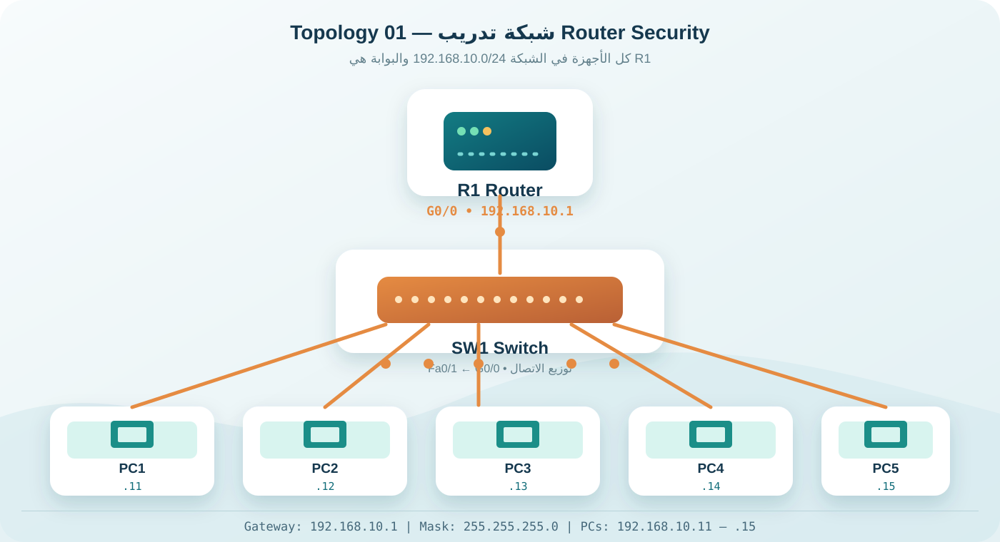

01 / مخطط المختبر
شاهد الأجهزة، ثم اربطها.
سنستخدم راوتر R1 متصلًا بسويتش SW1، ثم نوزع الاتصال على خمسة أجهزة PC. كل الأجهزة تعمل داخل الشبكة نفسها لتبسيط التجربة قبل الانتقال إلى تأمين الدخول.

الراوتر R1 / G0/0192.168.10.1
PC1192.168.10.11
PC2 — PC5.12 — .15
القناع / البوابة/24 · 192.168.10.1
قبل البدءضع القناع 255.255.255.0 والبوابة 192.168.10.1 لكل جهاز داخل Desktop ← IP Configuration.
02 / مسار التطبيق
نفّذها على مؤشر CLI.
نفّذ المراحل بالترتيب. كل مرحلة تبني على التي قبلها، خصوصًا عند إنشاء مفاتيح RSA وتفعيل SSH.
01جهّز المختبر والعناوينالبداية
02احمِ Privileged EXECأساسيات الحماية
03عنونة الواجهة وتفعيلهاالاتصال
04احمِ منفذ Consoleالدخول المحلي
05أنشئ مستخدمًا محليًاهوية الإدارة
06فعّل SSH ومفاتيح RSAتشفير الاتصال
07أمّن VTY باستخدام SSH فقطالدخول عن بُعد
08احفظ واختبر المختبرالإتمام
03 / التنفيذ
المرحلة الأولى: جهّز المختبر.
أضف Router 2911 وSwitch 2960 وخمسة أجهزة PC في مساحة العمل، ثم استخدم Copper Straight-Through للتوصيل. صِل R1 G0/0 بـ SW1 Fa0/1، وكل PC بمنفذ مختلف.
R1 / CLI
Router> enable
Router# configure terminal
Router(config)# hostname R1enableينقلك إلى Privileged EXEC بصلاحيات الإدارة.
configure terminalيفتح وضع الإعداد العام.
hostname R1يغيّر اسم الجهاز ويساعد لاحقًا في إنشاء RSA.
تحققيجب أن يظهر اسم الجهاز في المؤشر بالشكل R1(config)# قبل الانتقال إلى SSH.
04 / الإعداد الكامل
كل الإعداد في مكان واحد.
استخدمه كمرجع بعد فهم كل مرحلة. عند ظهور سؤال حجم مفتاح RSA، اكتب 1024 داخل المختبر.
R1 / running-config
enable
configure terminal
hostname R1
enable secret 123
service password-encryption
no ip domain-lookup
interface g0/0
ip address 192.168.10.1 255.255.255.0
no shutdown
exit
line console 0
password 123
login
exit
username ali secret 123
username abdo privilege 15 secret 123
ip domain-name cisco.com
crypto key generate rsa
! عند السؤال اكتب 1024
ip ssh version 2
line vty 0 4
login local
transport input ssh
exit
end
copy running-config startup-configتنبيه أمنيكلمة المرور 123 للتدريب فقط. استخدم كلمة قوية وفريدة في أي بيئة حقيقية، ولا تستخدم Telnet عندما يكون SSH متاحًا.
05 / التحقق وحل الأخطاء
لا تحفظ الأمر فقط — تحقق منه.
show ip interface briefتأكد أن G0/0 تظهر up / up.
show ip sshتحقق من أن SSH يعمل بالإصدار 2.0.
line vty 0 4تأكد من login local وtransport input ssh.
01
G0/0 — administratively down
ادخل إلى الواجهة واكتب:
interface g0/0
no shutdown02
RSA key generation failed
أضف hostname واسم النطاق قبل توليد المفتاح:
hostname R1
ip domain-name cisco.com03
SSH يرفض تسجيل الدخول
راجع ربط VTY بالمستخدم المحلي:
login local
transport input ssh04
PC لا يصل إلى R1
تأكد أن كل الأجهزة في 192.168.10.0/24 وأن البوابة 192.168.10.1.
LAB COMPLETE / 08 STEPS
حوّل كل مرحلة إلى مهارة.
افتح Packet Tracer بجانب هذه الصفحة وطبّق الأوامر بنفس الترتيب.